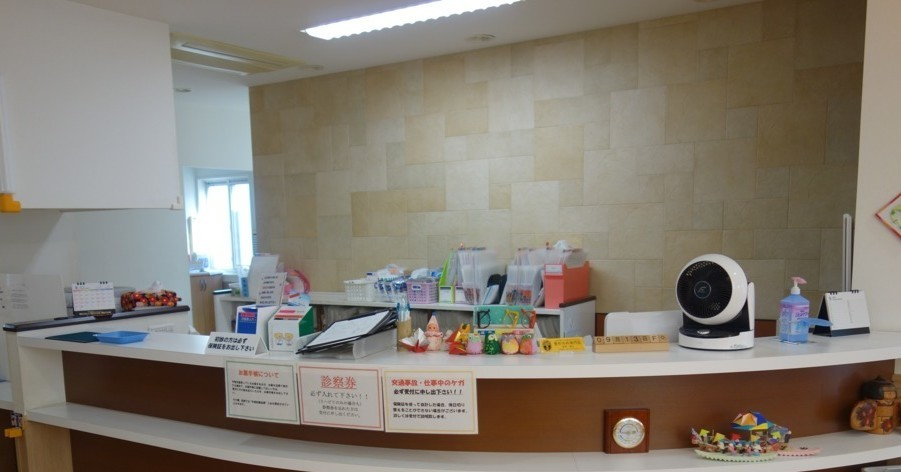
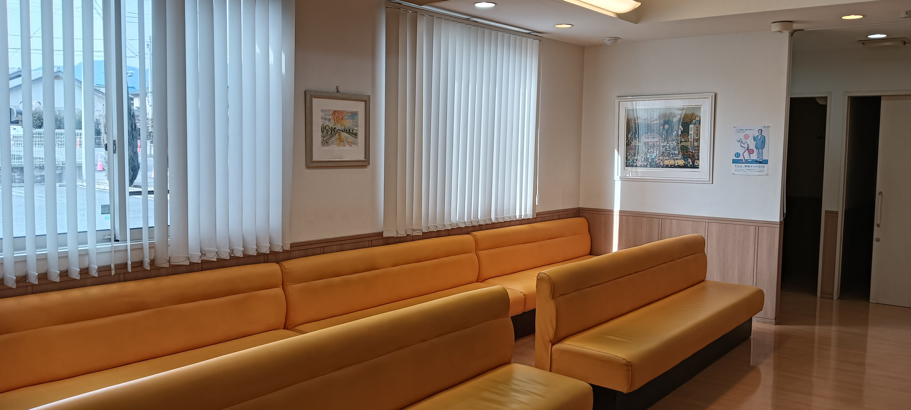

診療科目
- リウマチ科
- 整形外科
- リハビリテーション科
診療時間
| 曜日 | 午前 | 午後 |
|---|---|---|
| 月〜金 | 8:00 - 12:00 | 14:50 - 19:00 |
| 土 | 8:00 - 12:00 | 14:00 - 17:00 |
| 休診日 | 木曜日、祝祭日 | |
当院では、予約された患者様を優先的に診察しておりますが、予約をされていない場合でも対応させていただきます。
どうぞお気軽にご来院ください。
お願い
- アイドリング駐車は近隣の迷惑になるのでおやめください。
- 駐車場前の道路での停車は、渋滞の原因となるためご遠慮いただき、速やかに駐車場内へお入りください。
- 院内での携帯電話の利用はご遠慮ください。
お知らせ
- お知らせは今現在ありません。
院長紹介

院内の紹介
受付
待合室

リハビリで使用する医療機器と適応症状
体外衝撃波治療（ESWT）
圧力波を使って
痛みのある部分の回復を早めます。
手術なしで傷跡が残りません。
適応症状:
足底筋膜炎（かかとの痛み）
テニス肘・ゴルフ肘
石灰沈着性腱板炎（肩の痛み）
アキレス腱炎、ジャンパー膝
慢性的な筋・腱の痛み
干渉波治療
低周波の電気刺激で
筋肉や神経をほぐし、
血流を促進します。
適応症状:
肩こり・腰痛
坐骨神経痛
首や肩のしびれ
関節リウマチの痛み
慢性的な神経痛
超音波治療
超音波の振動を使って
筋肉や靭帯を温め、
血流を改善する治療法です。
適応症状:
ぎっくり腰
捻挫・肉離れ
肩・膝の痛み
スポーツによる筋肉・腱の損傷
頚椎・腰椎牽引療法
首や腰をゆっくり引っ張ることで、
神経の圧迫を軽減し、
痛みやしびれを和らげます。
適応症状:
頚椎症（首のこり・痛み）
腰の痛み
足の痺れ
坐骨神経痛
慢性的な腰痛
マイクロ波治療
電磁波で体の深部を温め、
血流を改善し、
筋肉の緊張を和らげます。
適応症状:
慢性的な腰痛・肩こり
関節痛（膝・肘など）
筋肉の疲労、神経痛
ウォーターベッド
水の力で全身をマッサージし、
血行を良くする機器です。
適応症状:
全身の疲労・倦怠感
肩こり・腰痛
ストレス・不眠
足のむくみ
骨折治療器（超音波骨折治療）
超音波で骨の回復を促進し、
骨のくっつきを早める治療法です。
適応症状:
骨折
骨癒合が遅れている
スポーツの早期復帰を目指す治療
※ どの治療が適しているかは、診察の上で決定します。気になる症状があればご相談ください。
※ また当院では理学療法士学生の実習を受け入れております。患者様にはご理解とご協力をお願い申し上げます。
アクセス
🚗 車でお越しの方
- 群馬総社駅から 約10分
- 八木原駅から 約7分
🚶 徒歩でお越しの方
- 吉岡温泉から 徒歩7分
🚌 バスでお越しの方
- 日本中央バス 「くわばら整形外科前」 下車
住所: 〒370-3601 群馬県北群馬郡吉岡町漆原1179